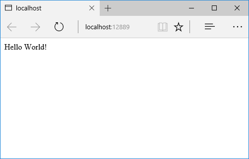
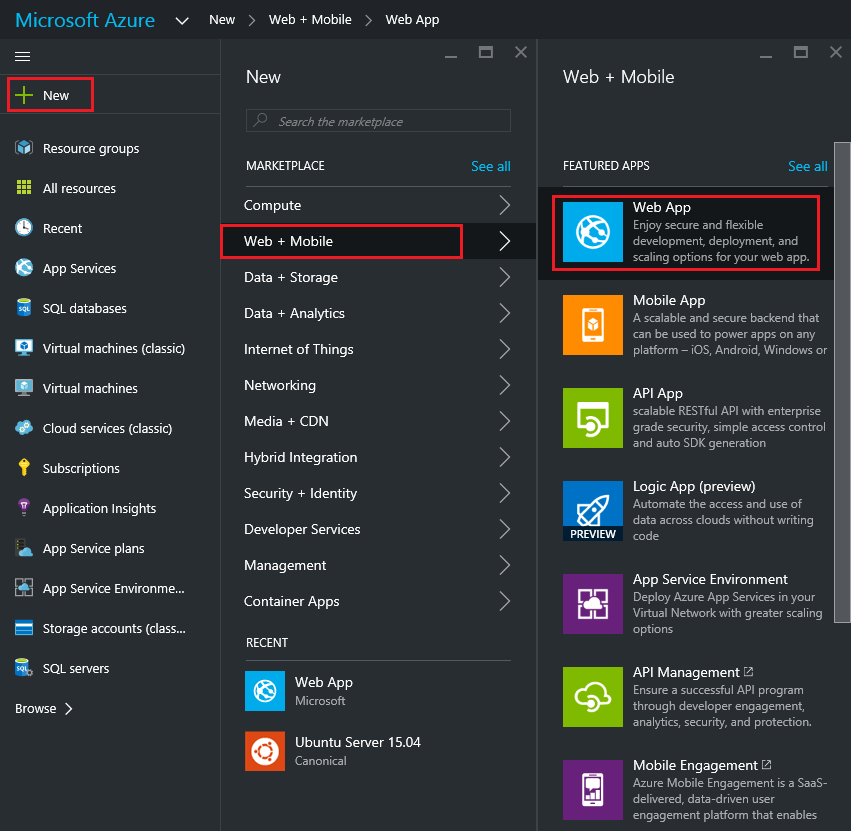

Continuous deployment to Azure for ASP.NET Core, with Visual Studio and Git
By Erik Reitan
This tutorial shows you how to create an ASP.NET Core web app using Visual Studio and deploy it from Visual Studio to Azure App Service using continuous deployment.
See also Use VSTS to Build and Publish to an Azure Web App with Continuous Deployment, which shows how to configure a continuous delivery (CD) workflow for Azure App Service using Visual Studio Team Services. Azure Continuous Delivery in Team Services simplifies setting up a robust deployment pipeline to publish updates for your app to Azure App Service. The pipeline can be configured from the Azure portal to build, run tests, deploy to a staging slot, and then deploy to production.
Note
To complete this tutorial, you need a Microsoft Azure account. If you don't have an account, you can activate your MSDN subscriber benefits or sign up for a free trial.
Prerequisites
This tutorial assumes you have already installed the following:
ASP.NET Core (runtime and tooling)
Git for Windows
Create an ASP.NET Core web app
Start Visual Studio.
From the File menu, select New > Project.
Select the ASP.NET Web Application project template. It appears under Installed > Templates > Visual C# > Web. Name the project
SampleWebAppDemo. Select the Create new Git respository option and click OK.
In the New ASP.NET Project dialog, select the ASP.NET Core Empty template, then click OK.

Running the web app locally
Once Visual Studio finishes creating the app, run the app by selecting Debug -> Start Debugging. As an alternative, you can press F5.
It may take time to initialize Visual Studio and the new app. Once it is complete, the browser will show the running app.

After reviewing the running Web app, close the browser and click the "Stop Debugging" icon in the toolbar of Visual Studio to stop the app.
Create a web app in the Azure Portal
The following steps will guide you through creating a web app in the Azure Portal.
- Log in to the Azure Portal
- TAP NEW at the top left of the Portal
TAP Web + Mobile > Web App

In the Web App blade, enter a unique value for the App Service Name.

Note
The App Service Name name needs to be unique. The portal will enforce this rule when you attempt to enter the name. After you enter a different value, you'll need to substitute that value for each occurrence of SampleWebAppDemo that you see in this tutorial.
Also in the Web App blade, select an existing App Service Plan/Location or create a new one. If you create a new plan, select the pricing tier, location, and other options. For more information on App Service plans, Azure App Service plans in-depth overview.
Click Create. Azure will provision and start your web app.

Enable Git publishing for the new web app
Git is a distributed version control system that you can use to deploy your Azure App Service web app. You'll store the code you write for your web app in a local Git repository, and you'll deploy your code to Azure by pushing to a remote repository.
Log into the Azure Portal, if you're not already logged in.
Click Browse, located at the bottom of the navigation pane.
Click Web Apps to view a list of the web apps associated with your Azure subscription.
Select the web app you created in the previous section of this tutorial.
If the Settings blade is not shown, select Settings in the Web App blade.
In the Settings blade, select Deployment source > Choose Source > Local Git Repository.

Click OK.
If you have not previously set up deployment credentials for publishing a web app or other App Service app, set them up now:
Click Settings > Deployment credentials. The Set deployment credentials blade will be displayed.
Create a user name and password. You'll need this password later when setting up Git.
Click Save.
In the Web App blade, click Settings > Properties. The URL of the remote Git repository that you'll deploy to is shown under GIT URL.
Copy the GIT URL value for later use in the tutorial.

Publish your web app to Azure App Service
In this section, you will create a local Git repository using Visual Studio and push from that repository to Azure to deploy your web app. The steps involved include the following:
Add the remote repository setting using your GIT URL value, so you can deploy your local repository to Azure.
Commit your project changes.
Push your project changes from your local repository to your remote repository on Azure.
In Solution Explorer right-click Solution 'SampleWebAppDemo' and select Commit. The Team Explorer will be displayed.

In Team Explorer, select the Home (home icon) > Settings > Repository Settings.
In the Remotes section of the Repository Settings select Add. The Add Remote dialog box will be displayed.
Set the Name of the remote to Azure-SampleApp.
Set the value for Fetch to the Git URL that you copied from Azure earlier in this tutorial. Note that this is the URL that ends with .git.

Note
As an alternative, you can specify the remote repository from the Command Window by opening the Command Window, changing to your project directory, and entering the command. For example:
git remote add Azure-SampleApp https://me@sampleapp.scm.azurewebsites.net:443/SampleApp.gitSelect the Home (home icon) > Settings > Global Settings. Make sure you have your name and your email address set. You may also need to select Update.
Select Home > Changes to return to the Changes view.
Enter a commit message, such as Initial Push #1 and click Commit. This action will create a commit locally. Next, you need to sync with Azure.

Note
As an alternative, you can commit your changes from the Command Window by opening the Command Window, changing to your project directory, and entering the git commands. For example:
git add .git commit -am "Initial Push #1"Select Home > Sync > Actions > Open Command Prompt. The command prompt will open to your project directory.
Enter the following command in the command window:
git push -u Azure-SampleApp masterEnter your Azure deployment credentials password that you created earlier in Azure.
Note
Your password will not be visible as you enter it.
This command will start the process of pushing your local project files to Azure. The output from the above command ends with a message that deployment was successful.
remote: Finished successfully. remote: Running post deployment command(s)... remote: Deployment successful. To https://username@samplewebappdemo01.scm.azurewebsites.net:443/SampleWebAppDemo01.git * [new branch] master -> master Branch master set up to track remote branch master from Azure-SampleApp.Note
If you need to collaborate on a project, you should consider pushing to GitHub in between pushing to Azure.
Verify the Active Deployment
You can verify that you successfully transferred the web app from your local environment to Azure. You'll see the listed successful deployment.
In the Azure Portal, select your web app. Then, select Settings > Continuous deployment.

Run the app in Azure
Now that you have deployed your web app to Azure, you can run the app.
This can be done in two ways:
In the Azure Portal, locate the web app blade for your web app, and click Browse to view your app in your default browser.
Open a browser and enter the URL for your web app. For example:
http://SampleWebAppDemo.azurewebsites.net
Update your web app and republish
After you make changes to your local code, you can republish.
In Solution Explorer of Visual Studio, open the Startup.cs file.
In the
Configuremethod, modify theResponse.WriteAsyncmethod so that it appears as follows:await context.Response.WriteAsync("Hello World! Deploy to Azure.");Save changes to Startup.cs.
In Solution Explorer, right-click Solution 'SampleWebAppDemo' and select Commit. The Team Explorer will be displayed.
Enter a commit message, such as:
Update #2Press the Commit button to commit the project changes.
Select Home > Sync > Actions > Push.
Note
As an alternative, you can push your changes from the Command Window by opening the Command Window, changing to your project directory, and entering a git command. For example:
git push -u Azure-SampleApp master
View the updated web app in Azure
View your updated web app by selecting Browse from the web app blade in the Azure Portal or by opening a browser and entering the URL for your web app. For example:
http://SampleWebAppDemo.azurewebsites.net